Every year, in the middle of April, US citizens and residents are required to file an income tax form. The following figure shows the 1040EZ tax form, which is the simplest of all these tax forms. For the majority of us, this is one of the most direct pieces of contact that we have with the government. Based on the declarations we file, we are required to pay taxes on the income we have earned over the year. These tax revenues are used to finance a wide variety of government purchases of goods and services and transfers to households and firms. Of course, income taxes are not unique to the United States; most other countries require their residents to complete a similar kind of form.
Figure 27.1 Easy Tax Form
From the perspective of a household or a firm, the tax form is a statement of financial responsibility. From the viewpoint of the government, the 1040 tax form is an instrument of fiscal policy. The 1040 form is based on the US tax code, and changes in that code can have profound effects on the economy—both in the short run and in the long run.
In this chapter, we study the various ways in which income taxes affect the economy. An understanding of taxes is critical for policymakers who devise tax policies and for voters who elect them. Tax policies are often controversial, in large part because they affect the economy in several different ways. For example, in the 2004 and 2008 US presidential campaigns, one of the most contentious economic policy issues was an income tax cut that President George W. Bush had initiated in his first term and that the Republican Party wished to make permanent. That issue returned to the forefront of political discussion in 2010, when these tax cuts were renewed.
Politicians have argued about such matters since the country was founded. Should the government ensure it has enough tax revenue to balance its budget? How should we raise the revenues to pay for our government programs? What is the appropriate tax on the income received by individuals and corporations? Fiscal policy questions like these are debated in the United States and other countries throughout the world. They are tough questions for politicians and economists alike.
Politicians focus largely on who wins and loses—which groups will bear the burden of taxes and receive the benefits of government spending and transfers? They do so for political reasons and because one goal of a tax system is to redistribute income. Economists emphasize something rather different. Economists know that taxes are necessary to finance government expenditures. At the same time, they know that taxes can have the negative effect of distorting people’s decisions and lead to inefficiency. Hence economists focus on designing a tax system that achieves its goals of raising revenue and redistributing income, without distorting the decisions of individuals and firms too much.
In addition, macroeconomists have observed that taxes significantly affect overall economic performance, as measured by variables such as real gross domestic product (real GDP) growth or the unemployment rate. The government can use changes in taxes as a means of influencing aggregate spending in the economy. In the United States, the federal government has often changed income taxes to affect overall economic performance. In this chapter, we examine two examples: the tax policies of the Kennedy administration of 1960–63 and the Reagan administration of 1980–88.
Our discussion of the Kennedy tax cut experience highlights the way in which variations in income taxes are used to help stabilize the macroeconomy. We use the Reagan tax cuts of the early 1980s to explore the growth implications of income taxes, which are often called “supply-side effects.”
Our approach to understanding the effects of income taxes on the economy is summarized in Figure 27.2 "Macroeconomic Effects of Tax Policy":
Figure 27.2 Macroeconomic Effects of Tax Policy
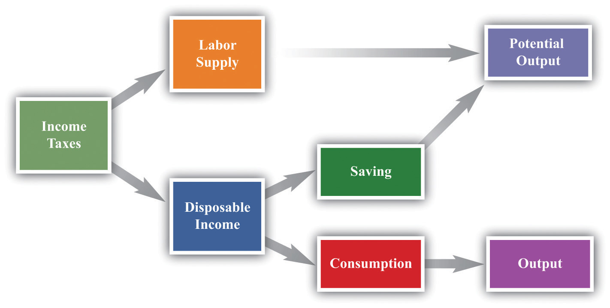Any change in the income tax regime affects both the spending and the supply sides of the economy. Our reason for thinking separately about the Kennedy and Reagan tax experiments is to isolate the spending effects and the supply effects. Once you understand these different channels, you will be equipped to evaluate other tax policies, such as those adopted later by President George W. Bush. Finally, the figure reveals that the choice between consumption and saving and the choice between work and leisure are at the heart of our analysis.
After you have read this section, you should be able to answer the following questions:
Before delving into the details of President Kennedy’s tax policy, we review the basics of personal income taxation. This review is not only helpful for your study of economics but also may be useful when you have to fill out your own income tax form. Even a quick glance at the 1040EZ form in Figure 27.1 "Easy Tax Form" suggests that taxes are a very complex topic. Indeed, the US federal tax code governing income taxes alone runs to thousands of pages. The taxes that you pay depend on your adjusted gross income (line 4), which is the income you receive from a variety of sources (the main components noted on the return are wages, interest income, and unemployment compensation). But there is also a “standard deduction” and an “exemption” (line 5)—for a single person in 2010, these totaled $9,350. For the EZ form, your taxable income is given as the following:
taxable income = adjusted gross income − (deduction + exemption).If your financial situation is very simple, you can file this EZ form. However, if you receive income from other sources (such as dividends on stocks), or if you wish to “itemize” your deductions (for payments of interest on home mortgages, dependent children, property taxes, and so forth), you have to file a more complicated form, often with several other forms containing supplementary information. Thus the calculation of adjusted gross income and deductions can be quite complex. For all individuals, however, the basic relationship still holds:
taxable income = adjusted gross income − (deductions and exemptions).Once you know your taxable income, there are then different tax rates for different income levels.Even this is not quite the whole story. There are various tax credits for which some individuals are eligible, and there is also something called the alternative minimum tax, which must be calculated.
From the perspective of macroeconomics, this complexity is daunting, particularly when we remember that the details of the tax system vary from country to country and year to year. The income tax is evidently not a simple thing that can be incorporated in a straightforward way into our frameworks. We cannot hope to incorporate all these features of the tax code into our theory without getting completely bogged down in the details. If we are going to make sense of how taxes affect consumption behavior, we must leave out most of these complicating elements. The challenge for economists is to decide which features of the tax system are critical for our analysis and which are peripheral and can be safely ignored.
One noteworthy feature of the income tax system is that not everyone pays the same amount of tax. Table 27.1 "Revised 2010 Tax Rate Schedules" shows the income tax schedule for the year 2010 for a single taxpayer.There are other schedules for members of a household filing jointly. These and related tables are available from “Forms and Publications,” Internal Revenue Service, accessed September 20, 2011, http://www.irs.gov/formspubs/index.html. It indicates how much tax a must be paid for a given level of taxable income.
Table 27.1 Revised 2010 Tax Rate Schedules
| If Taxable Income | The Tax Is Then | |||
|---|---|---|---|---|
| Is Over (in US$) | But Not Over (in US$) | This Amount (in US$) | Plus This (%) | Of the Excess Over (in US$) |
| 0 | 8,375 | 0 | 10 | 0 |
| 8,375 | 34,000 | 837.50 | 15 | 8,375 |
| 34,000 | 82.400 | 4,681.25 | 25 | 34,000 |
| 82.400 | 171,850 | 16,781.25 | 28 | 82.400 |
| 171,850 | 373,650 | 41,827.25 | 33 | 171,850 |
| 373,650 | — | 108,421.25 | 35 | 373,650 |
To use this table, you must first find your taxable income. Suppose it is $20,000. Your tax is then determined from the second row of the table. You would owe 837.50 + 0.15 × (20,000 − 8,375), which is $2,581.25.
Figure 27.3 shows the relationship between taxes and income implicit in the tax schedule summarized in Table 27.1 "Revised 2010 Tax Rate Schedules". This figure shows the amount of tax you must pay given your adjusted gross income (upper panel) and your taxable income (lower panel). We see two key facts:
This leads us to two ways to think about the tax schedule a household faces.
Figure 27.3
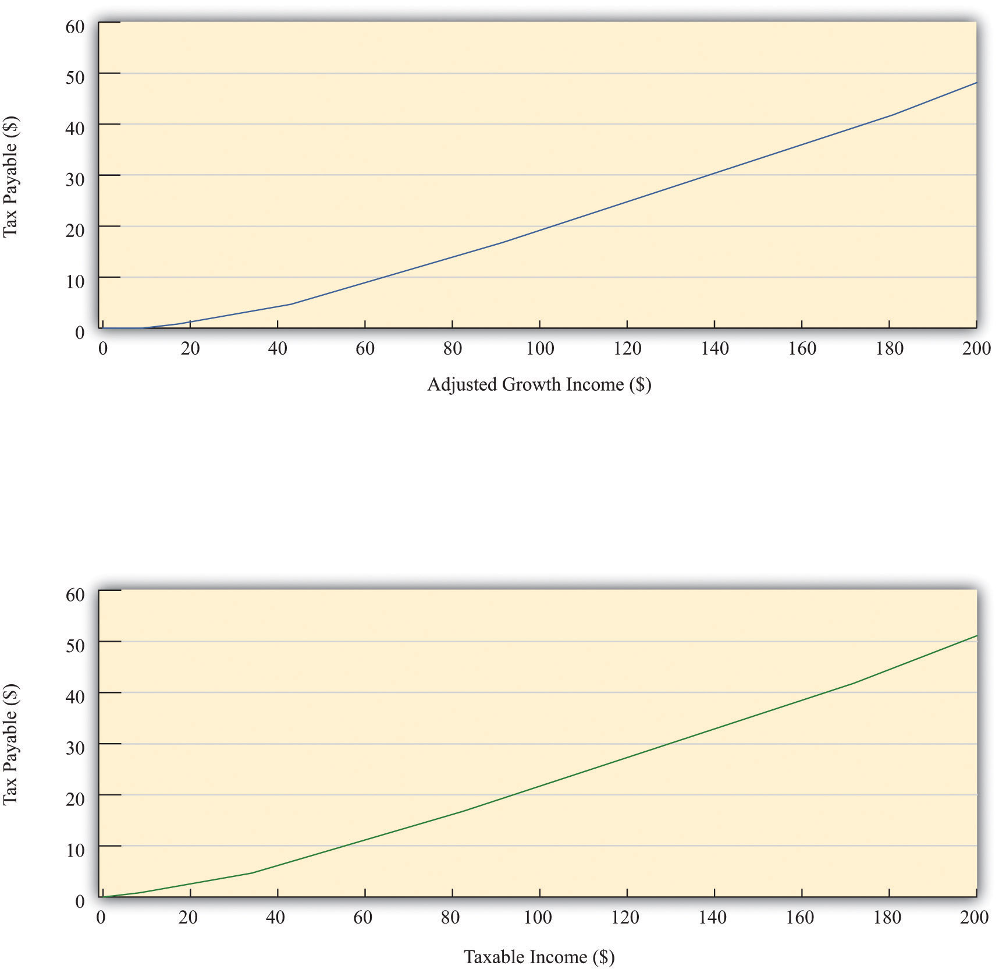The figure shows the amount of tax owed by a single individual in the United States who takes the “standard deduction.” The upper panel has adjusted gross income on the horizontal axis, whereas the lower panel has taxable income on the horizontal axis.
As shown in Table 27.1 "Revised 2010 Tax Rate Schedules", there were six different tax rates in effect in 2010, ranging from 10 percent for low-income individuals to 35 percent for high-income individuals. The tax rates in the fourth column are the marginal tax ratesThe tax rate paid on additional income. since they represent the tax rate paid on marginal (that is, additional) income. Thus higher income households pay higher marginal tax rates. The marginal tax rate can be seen graphically as the slope of the line in Figure 27.3.
We are often interested in knowing what fraction of an individual’s income goes to taxes. This is called the average tax rateThe ratio of total taxes paid to income.. Returning to the example we calculated earlier, if you have an income of $20,000 and thus pay taxes of $2,581.25, your average tax rate is equal to , or 12.9 percent. The marginal tax rate of 15 percent is greater than the average tax rate of 12.9 percent. There is a difference between the tax you pay on average and the tax rate charged on the last dollar of income.The average tax rate can also be given a graphical interpretation. It is the slope of a line from the origin to the point on the graph.
Leaving aside the details of exemptions and deductions, the essence of the income tax code is captured in the table and figures we have just presented. Even these, however, are quite complicated. We want to build income taxes into our framework of the economy, so it would be nice if we could decide on a simpler way to represent the tax code. The art of economics lies in deciding how to take something complicated, like the US income tax code, and represent it in as simple a way as possible while still retaining the features that matter to the problem under discussion.
Looking at Figure 27.3, we can see that the relationship between taxes paid and taxable income looks approximately like a straight line. It is not exactly a straight line because it becomes steeper as marginal tax rates increase. For our purposes in this chapter, however, it is a reasonable simplification to represent this relationship as a line—that is, to suppose that the marginal tax rate is constant.
In addition, we ignore the standard deduction and exemption. That is, we suppose that people start paying taxes on their very first dollar of income. Thus we suppose that
taxes paid = tax rate × income.Representing the tax schedule this way is fine if we want to examine the economy as a whole and are not particularly concerned with the way in which taxes affect different households. We use this simplified model of the tax system at various times in this chapter.
We can use this simple model of the tax system to see how a change in the income tax rate affects both individuals and the economy as a whole. Suppose there is a cut in the tax rate. Since taxes paid = tax rate × income, the immediate impact is to reduce the amount of taxes households pay: for a given income, a reduction in the tax rate reduces taxes paid. This means that disposable incomeIncome after taxes are paid to the government., which is the income left over after paying taxes and receiving transfers, increases.
What do households do with the increase in disposable income? A likely answer is that a typical household spends some of this extra income and saves the remainder. If all households follow this pattern, then the increased spending by each household translates into larger consumption in the aggregate economy. At this point, the power of the circular flow of income will take over, and the level of income and output in the economy will increase even further.
Toolkit: Section 31.27 "The Circular Flow of Income"
You can review the circular flow of income in the toolkit.
As the economy expands, the amount of taxes paid starts to increase. In other words, one consequence of a tax cut is that the tax base (income) expands. The ultimate effect of a tax cut on the overall amount of taxes paid depends on both this expansion of the tax base (income) and the reduction of the tax rate.
The effects of a tax cut are not the same for everyone. Changes in the tax code affect the distribution of income. If we want to understand such effects, however, it is a mistake to use our simple model of the tax system. We must instead examine how marginal tax rates are different at different levels of income. Suppose that marginal tax rates increase with income, which means that average tax rates increase with income. Higher income households then pay a larger fraction of their income as taxes to the government. As a result, the distribution of income after taxes is more equal than the distribution of income before taxes.
Imagine that we take two individuals with different levels of income and calculate their tax payments and after-tax income. Suppose that the first individual earns $20,000 per year and the other earns $200,000. Table 27.2 "The Redistributive Effects of Taxation (in US$)" shows the amount of tax each pays and their income after taxes, based on the tax schedule from Table 27.1 "Revised 2010 Tax Rate Schedules". Notice from the table that the marginal tax of the high-income household is 33 percent, compared with the 15 percent marginal tax of the low-income household. The total tax paid by the high-income individual is $51,116.75, which is almost 20 times the tax paid by the low-income household. Whereas the pre-tax income of the richer household was 10 times greater than that of the poorer household, its after-tax income is 8.5 times greater.
Table 27.2 The Redistributive Effects of Taxation (in US$)
| Income | Tax Paid | Income after Taxes |
|---|---|---|
| 20,000 | 2,581.25 | 17,418.75 |
| 200,000 | 51,116.75 | 148,883.25 |
This example shows that the tax code redistributes income from high-income to low-income households. What is more, the redistribution does not necessarily stop here. We have not said anything about what the government does with the tax revenues it receives. If the government transfers all those revenues to low-income households, then the combined redistributive effect of taxes and transfers is even stronger.
When we talk about the effects of taxes on labor supply and disposable income, keep in mind that the size of these effects is different for households at different levels of income. These varying effects matter for the politics of tax cuts because lawmakers pay close attention to which income groups are affected by tax policy.
After you have read this section, you should be able to answer the following questions:
Now that we have some basic idea of how income taxes work, we turn to the Kennedy tax cut of 1964. We begin with some background information; we then develop the economic tools needed to analyze the effects of the tax policy on household consumption and thus on real gross domestic product (real GDP).
In his inaugural presidential address, President Kennedy famously said, “My fellow Americans, ask not what your country can do for you; ask what you can do for your country.” The Kennedy administration recruited top individuals in all fields (“the best and the brightest”) to come to Washington in this new spirit of commitment to public service.See David Halberstam, The Best and the Brightest (New York: Ballantine Books, 1972).
Every president has a group of economists, known as the Council of Economic Advisors (CEA; http://www.whitehouse.gov/cea), that provides advice on economics and economic policy. The list of members and staff of the 1961 CEA reads today like a “who’s who” of economics. James Tobin and Robert Solow were prominent members of the economics team; both went on to win Nobel Prizes in Economics. The chairman of the CEA was Walter Heller, an economist known for a wide variety of contributions on the conduct of macroeconomic policy.
The economists in the Kennedy administration observed that there had been three recessions in the two Eisenhower administrations (1952–1960): one from 1953 to 1954 after the Korean War, one from 1957 to 1958, and one in 1960. You can see these in Figure 27.4 "Real GDP in the 1950s". The CEA members and staff thought that more aggressive fiscal and monetary policies could be used to keep the economy more stable and prevent such recessions. Their goal of moderating fluctuations in the economy was based on the framework of the basic aggregate expenditure model, which had been developed in the aftermath of the Great Depression, augmented by some developments in economic thinking from the 1940s and 1950s. Based on that analysis, they believed that fiscal and monetary policies could be used to control aggregate spending and hence real GDP.
Toolkit: Section 31.30 "The Aggregate Expenditure Model"
You can review the aggregate expenditure model in the toolkit.
Figure 27.4 Real GDP in the 1950s
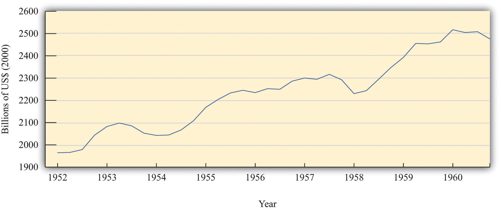The chart shows real GDP in the United States between 1952 and 1960, measured in billions of year 2000 dollars.
Source: Bureau of Economic Analysis.
This group of economists had, on one hand, a clearly defined goal of stabilizing the macroeconomy and, on the other hand, a set of policy instruments—economic variables such as taxes, government spending, and interest rates—that were under the control of policymakers. They also had a framework of analysis (the aggregate expenditure model) that explained how these instruments could be used to achieve their goals. Finally, they had a president who was willing to listen and take their advice. Never before had economists had such tools and wielded such influence.
The opportunity to test their ideas arose toward the middle of the Kennedy presidency. In the middle of 1962, it was apparent to the Kennedy administration economists that the economy was beginning to sputter. The growth rate of real GDP was 7.1 percent in 1959 but decreased to 2.5 percent and 2.3 percent in 1960 and 1961, respectively.Economic Report of the President (Washington, DC: GPO, 2005):table B-2, GPO Access, accessed September 20, 2011, http://www.gpoaccess.gov/eop/2005/2005_erp.pdf. Their response was to initiate a tax cut.
As is usually the case when a major fiscal policy action is under consideration, there was a lengthy time lag between the initiation of the policy and its implementation. Even though the tax cut was proposed in 1962, President Kennedy never saw it put into effect. He was assassinated in November 1963; the tax cut for individual households and corporations was not enacted until early 1964. For households, tax withholding rates decreased from 18 percent to 14 percent, leading to an estimated tax reduction of about $6.7 billion. Taxes on corporations were also decreased; the reduction in taxes for 1964 was expected to be about $1.7 billion. By 1965, the economists expected that taxes would be lower by $11 billion. In 1965, nominal GDP was about $719 billion, so these changes were about 1.5 percent of nominal GDP.
For many observers of the macroeconomy, this was a watershed event. The Economic Report of the President proclaimed 1965 the “Year of the Tax Cut.” In retrospect, these years were the heyday of Keynesian macroeconomics: for the first time, the government was using tax policy in an attempt to fine-tune the economy.
Figure 27.5 "Tax Policy during the Kennedy Administration" shows what happened to average and marginal tax rates. Marginal tax rates were very high at the time—much greater than in the present day. At high levels of income, more than 90 cents of every additional dollar had to be paid to the government in taxes. Consequently, average tax rates were also high: an individual with taxable income of $100,000 (a very high level of income back then) had to pay about two thirds of that amount to the government. The Kennedy tax cuts reduced these tax rates. Even after the tax cut, the marginal and average tax rates both increased with income. In other words, the tax system still redistributed income across households. But when we compare 1963 and 1964, we see that the marginal tax rate did not increase as rapidly under the new tax policy. Therefore, this channel of redistribution was weaker under the new tax policy.
Figure 27.5 Tax Policy during the Kennedy Administration
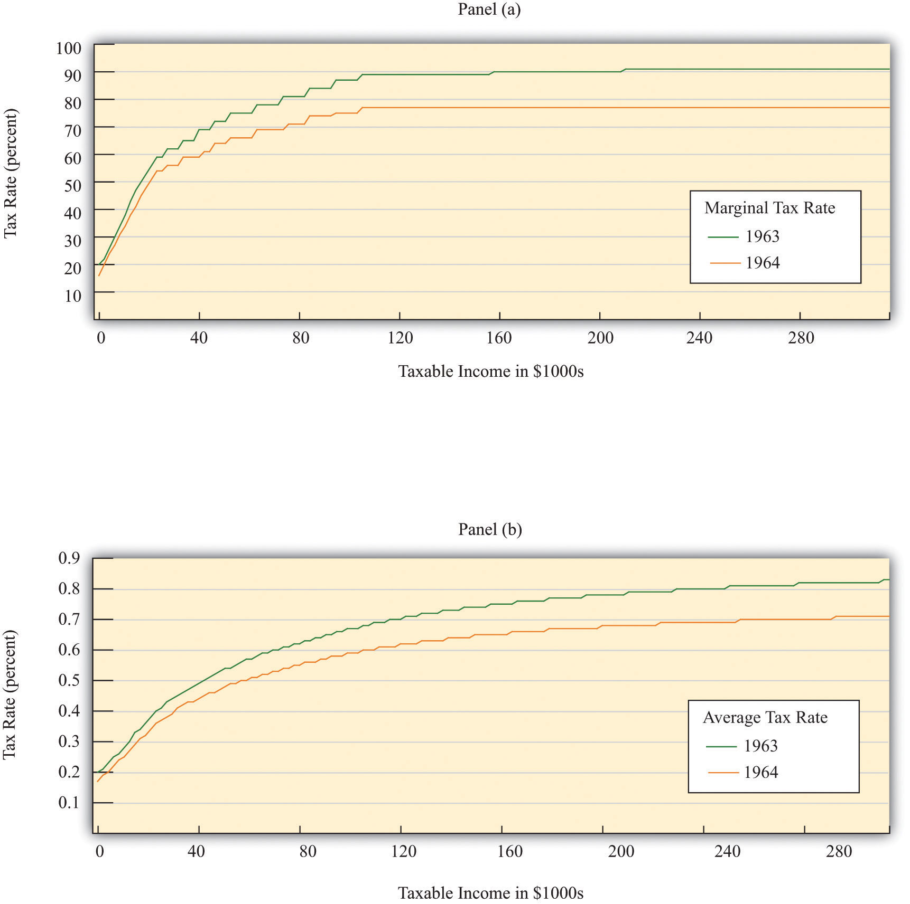The charts show the impact of the Kennedy tax cut. Part (a) highlights how the marginal tax rates for households changed from 1963 to 1964, and part (b) shows the impact on average tax rates.
Source: Department of the Treasury, IRS 1987, “Tax Rates and Tables for Prior Years” Rev 9-87
For their policy to be successful, Kennedy’s advisors had to ask and then answer a series of questions. How big a tax cut should they recommend? How long should it last? What would be the effect on government revenues? What would be the effect on real GDP and consumption? Economists working in government today confront exactly the same questions when contemplating changes in tax policy. Questions such as these epitomize economics and economists at work.
Looking back at this experiment with almost half a century of hindsight, we can ask additional questions. How well did these policies work in terms of achieving their goal of economic stabilization? What actually happened to consumption and output? Was the tax policy successful?
The Kennedy economists needed a quantitative model of economic behavior: a formalization of the links between their policy tools (tax rates) and the outcomes that they cared about, such as consumption and output. Using the aggregate expenditure model, they wanted to know how big a change in real GDP they could expect from a given change in the tax rate. To use the model to study income taxes, we need to add some theory about how spending responds to changes in taxes. Accordingly, we study the effects of income taxes on household consumption and then discuss how changes in consumption lead to changes in output.
Although we are using a historical episode to help us understand the effect of taxes on the economy, this chapter is not intended as a lesson in economic history. Variations of this same model are still used today to analyze current economic policies. Indeed, in response to the economic crisis of 2008, many countries around the world cut taxes in an attempt to stimulate their economies. By studying the experience of the early 1960s, we gain insight into a critical part of macroeconomics: the linkage between consumption and output.
Having said that, economics has advanced significantly since the 1960s, and the state-of-the-art analysis for that time seems oversimplified today. Modern economists think that the policy advisers in the 1960s neglected some key aspects of the economy. Their insights were not wrong, but they were incomplete. Our understanding of the economy has evolved since Tobin, Solow, and Heller designed the nation’s tax policy.
We begin by studying the relationship between consumption and income. We first develop some ideas about how households make consumption decisions, and, on the basis of those ideas, we make some predictions about what we expect to happen when there is a cut in taxes. We then examine the evidence from the Kennedy tax cut.
In microeconomics, we study how a consumer allocates incomes across a wide variety of products. Microeconomists interested in studying, say, the market for ice cream examine how households choose between ice cream and other products that are close substitutes, such as frozen yogurt, and between ice cream and other products that are complements, such as hot fudge sauce. When studying microeconomics, however, we focus on choices for goods made at a particular point in time.
Macroeconomics has a different emphasis. It emphasizes the choice between consumption and saving. Instead of thinking about the consumption of ice cream today versus frozen yogurt today, we study the choice between consumption today and consumption in the future. To highlight this decision, macroeconomists downplay the choices among different goods and services. Of course, in reality, households decide both how much to spend and how much to save, and what products to purchase. But it is convenient to treat these decisions separately.
The same basic ideas of household decision making apply in either case. Households distribute their income across goods to ensure that no redistribution of that spending would make them better off. This is true whether we are talking about ice cream and frozen yogurt, or about consumption and saving. Households allocate their income between consumption and savings in a way that makes them as well off as possible. They do not spend all their income this year because they want to save some for consumption in the future.
Suppose a household in the United States had taxable income of $20,000 in 2010. Some of this income goes to the payment of taxes to federal and state governments. (From our earlier discussion, the average federal tax rate is 13.25 percent.) The rest is either spent on goods and services or saved. The income that is spent on goods and services today is spread over the many products that a household buys. The income that is saved will likewise be used in the future to purchase different goods and services.
The most basic measure of aggregate economic activity is real GDP, which is the total amount of final goods and services produced in our economy over a period of time, such as a year. The rules of national income accounting mean that real GDP measures three different things at once: the production or output of the economy, the spending in the economy; and the income generated in the economy. We use real GDP as our most general measure of income.
We work in this chapter with two further concepts of income from the national accounts: personal incomeThe income in the economy that flows to households. and disposable incomeIncome after taxes are paid to the government.. Some of the income generated in the economy is retained by firms to finance new investment, so it does not go to households. Personal income refers to that portion of GDP that finds its way directly into the hands of households. (At the level of an individual household, it corresponds closely to adjusted gross income on the tax form.) Disposable income is what remains after we subtract from personal income the taxes paid by households to the government and add to personal income the transfers (such as welfare payments) received by households from the government. For a household, disposable income measures its available resources after taxes have been paid and transfers received.
Our starting point for understanding consumption choices is the household budget constraint for a typical household. The household receives income from working and other sources and pays taxes to the government. The remainder is the household’s disposable income. The household budget constraint reminds us that, ultimately, you must either spend the income you receive or save it; there are no other choices. That is,
disposable income = consumption + saving.A theory of consumption is a theory of how households decide to divide their income between consumption and saving. Saving is a way to convert current income into future consumption. A theory of consumption is equivalently a theory of saving. A fundamental idea about household behavior is that people do not wish their consumption to vary a lot from month to month or year to year. This principle is so important that economists give it a special name: consumption smoothing. Households use saving and borrowing to smooth out fluctuations in their income and keep their consumption relatively smooth. People will tend to save when their income is high and will dissave when their income is low. (Dissave is the word economists use to mean either running down one’s existing wealth or borrowing against future earnings.)
Toolkit: Section 31.32 "Consumption and Saving"
You can review the consumption-saving decision in the toolkit.
Perfect consumption smoothing means that the household consumes exactly the same amount in each period of time (for example, a month or a year). If a construction worker earns $10,000 per month working from May to October but nothing for the rest of the year, we do not expect that he will spend $10,000 per month in the summer and then starve in the winter. It is much more likely that he will save half of his income in the summer and spend those savings in the winter, so that he spends about $5,000 per month throughout the year.
The logic of consumption smoothing is the same as the argument for why households buy many different goods rather than one single good. Households typically take their income and spend it on a wide variety of products. Furthermore, when income increases, the household will spread this extra income across the spectrum of goods it consumes; not all of it is spent on one good. If you obtain more income, you do not spend all this extra income on ice cream, for example. You buy more of many different goods.
One way to represent consumption smoothing is by means of a consumption functionA relationship between current disposable income and current consumption.. This is an equation that relates current consumption to current disposable income. It allows us to go from an abstract idea about consumption behavior—consumption smoothing—to a specific formulation of consumption that we can use in a model of the aggregate economy.
We suppose the consumption function can be represented by the following equation:
consumption = autonomous consumption + marginal propensity to consume × disposable income.We make three assumptions:
Table 27.3 "Consumption, Income, and Saving" contains an example of a consumption function where autonomous consumption equals 10,000 and the marginal propensity to consumeThe amount by which consumption increases when disposable income increases by a dollar. equals 0.8. If the household earns no income at all (disposable income = $0), it still spends $10,000 on consumption. In this case, savings equal −$10,000. This means the household is either drawing on existing wealth (accumulated savings from the past) or borrowing against income expected in the future. The marginal propensity to consume tells us how the household divides additional income between consumption and saving. In our example, the household spends 80 percent of any additional income and saves 20 percent.
Table 27.3 Consumption, Income, and Saving
| Disposable Income ($) | Consumption ($) | Saving ($) |
|---|---|---|
| 0 | 10,000 | −10,000 |
| 10,000 | 18,000 | −8,000 |
| 20,000 | 26,000 | −6,000 |
| 30,000 | 34,000 | −4,000 |
| 40,000 | 42,000 | −2,000 |
| 50,000 | 50,000 | 0 |
| 60,000 | 58,000 | 2,000 |
| 70,000 | 66,000 | 4,000 |
| 80,000 | 74,000 | 6,000 |
| 90,000 | 82,000 | 8,000 |
| 100,000 | 90,000 | 10,000 |
For example, when income is equal to $20,000, consumption can be calculated as follows:
consumption = $10,000 + 0.8 × $20,000 = $10,000 + 0.8 × $20,000 = $26,000.The household is still dissaving but now only by $6,000. Table 27.3 "Consumption, Income, and Saving" also shows that when income equals $50,000, consumption and income are equal, so savings are exactly zero. At income levels above $50,000, the household has positive savings.
Figure 27.6 "Consumption, Saving, and Income" shows the relationship between consumption and income graphically. We also graph the savings function in Figure 27.6 "Consumption, Saving, and Income". The savings function has a negative intercept because when income is zero, the household will dissave. The savings function has a positive slope because the marginal propensity to saveThe amount by which saving increases when disposable income increases by a dollar. is positive.
Figure 27.6 Consumption, Saving, and Income
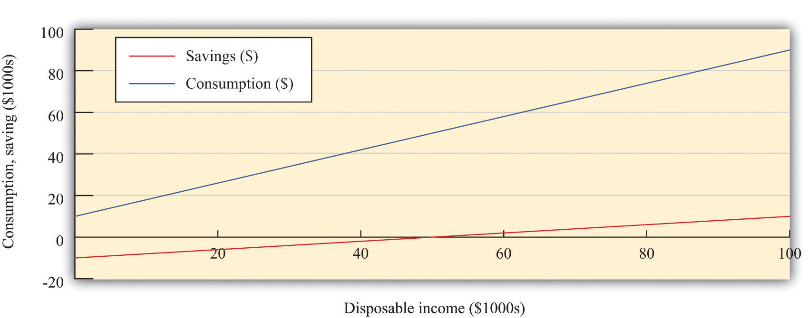The graph shows the relationship between consumption and disposable income, where autonomous consumption is $10,000 and the marginal propensity to consume is 0.8. When disposable income is below $50,000, savings are negative, whereas at income levels above $50,000, savings are positive.
As well as the marginal propensity to consume and the marginal propensity to save, we can examine the average propensity to consumeThe ratio of consumption to disposable income., which measures how much income goes to consumption on average. It is calculated as follows:
When disposable income increases, consumption increases but by a smaller amount. This means that when disposable income increases, people consume a smaller fraction of their income: the average propensity to consume decreases.In terms of mathematics, we are saying that, if we divide through the consumption function by disposable income, we getAn increase in disposable income reduces the first term and the average propensity to consume. Meanwhile, the ratio of saving to disposable income is called the savings rateThe ratio of household savings to disposable income.. For example,
The savings rate and the average propensity to consume together sum to 1. In other words, a decline in the average propensity to consume equivalently means that households are saving a larger fraction of their income.
Because the consumption and savings relationships are two sides of the same coin, economists wishing to find the actual values of autonomous consumption and the marginal propensity to consume can examine data on consumption, savings, or both. If the data were perfect, we would get the same answer either way. For the United States, both consumption and savings data are readily available, but in some countries the data on savings may be of higher quality than the consumption data, in which case economists use savings data to understand consumption behavior.
The consumption function is useful because it captures two fundamental insights: households seek to smooth their consumption, but consumption nonetheless responds to current income. But the consumption function is really too simple.Refining our theory of consumption is a subject for Chapter 28 "Social Security".
First, it ignores the role of accumulated wealth. If you consider two households with the same level of current income but different amounts of accumulated wealth, the one with higher wealth will probably consume more. Second, the consumption function does not explicitly include the role of expectations. A household’s consumption reflects not only income today and the accumulation of income in the form of wealth but also anticipated income. So, for example, if a government announces that it will increase income tax rates in two years, we expect that households will respond immediately to smooth out the effects of these future taxes. The only way the consumption function allows us to capture wealth or expectations of future income is through autonomous consumption. This is fine as far as it goes, but it means that we are taking too many aspects of consumption as given, rather than explaining them with our theory.
Another complication is that changes in income today are often correlated with changes in income in the future. If your income increases today, is this an indication that your income will also be higher in the future? To see why this matters, consider two extreme examples. First, suppose that you receive a one-time inheritance of $10 million. What will you do with this income? According to the consumption smoothing argument, you will save some of this income to increase your consumption in the future. Roughly speaking, if you thought you had 10 years left to live, you might increase your consumption by about $1 million per year. In this case your marginal propensity to consume would be only 0.1.
Now suppose that instead of a $10 million windfall, you learn you will receive $1 million each year for the next 10 years. In this case, your income is already spread out over your lifetime. So, in this second case, you will again want to smooth your consumption. But since the increase in income will be maintained for your lifetime, you can increase your consumption by an amount equal to the increase in your income. Your marginal propensity to consume will be 1.0.
The difference between these two situations is that in the first case the income increase is temporary, and in the second it is permanent. The logic of consumption smoothing implies that the marginal propensity to consume is near 1 for permanent changes in income but much smaller for temporary changes in income.
We can now figure out the effects of a cut in taxes on consumption and saving. A reduction in taxes will increase disposable income. From the consumption function, this results in an increase in consumption equal to the marginal propensity to consume times the increase in disposable income. The average propensity to consume decreases. To summarize, if taxes are cut in the economy, we expect to see the following:
When natural scientists such as molecular biologists or particle physicists want to see how good their theories are, they conduct experiments. Economists and other social scientists have much less ability to carry out experiments—certainly at the level of the macroeconomy. The Kennedy tax cut, however, is like a “natural” experiment in that there was a major policy change that we can think of as a change in an exogenous variableA variable determined outside the model that is not explained in the analysis.. It is not, in truth, completely exogenous. We already explained that the tax cut was enacted in response to the poor performance of the economy. We are not badly misled by thinking of it as an exogenous event, however. We can therefore use it to see how well our theory performs. Specifically, we can look to see whether disposable income and consumption do behave as we have predicted.
Before we turn to those specific questions, let us examine some data on consumption. Figure 27.7 "Consumption and Income" shows the behavior of consumption and disposable income from 1962 to 2010. The measures of both income and consumption are in year 2005 dollars. This means that the nominal (money) levels of income and consumption for each of the years have been corrected for inflation, so that we can see how the real level of consumption relates to the real level of income.
Figure 27.7 Consumption and Income
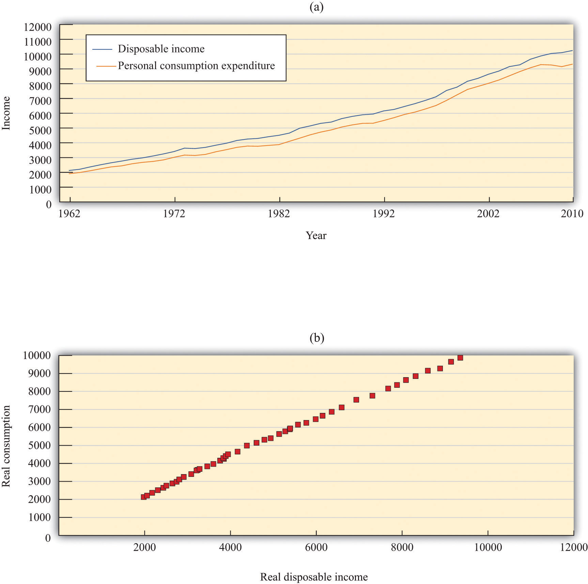The charts show consumption and personal disposable income (in billions of year 2005 dollars) from 1962 to 2010. Consumption and disposable income grew substantially over this time (a) and there is a close relationship between consumption and income (b).
Source: Economic Report of the President (Washington, DC: GPO, 2011), table B-31, accessed September 20, 2011, http://www.gpoaccess.gov/eop/tables11.html.
Toolkit: Section 31.8 "Correcting for Inflation"
You can review how to correct for inflation in the toolkit.
The first thing we see in Figure 27.7 "Consumption and Income" is that both consumption and disposable income grew substantially over the 1962–2010 period. This should come as no surprise. We know that the US economy grew over this period, so we would expect that disposable income and consumption would also grow. Figure 27.7 "Consumption and Income" reveals that, as a consequence, there is a close relationship between consumption and income, and consumption expenditures are, on average, about 91 percent of disposable income. Although Figure 27.7 "Consumption and Income" looks something like a consumption function, we should not take this relationship as strong evidence for our theory because it is primarily caused by the fact that both variables grew over time.
Now we return to the Kennedy tax cut. How well does our model perform in predicting the effects of the tax changes on consumption? Superficially, this seems like an easy question. We can examine the changes in consumption and income that arose after the tax changes and see whether these changes are consistent with the model.
There is a critical difference between our theory and reality, however. When we discussed the effects of a tax cut using our theory, we implicitly held everything else constant. We presumed that there was a change in taxes and no change in any other variable. For example, we assumed that government spending, investment spending, and net exports all did not change. In fact, other economic variables were changing at the same time that the new tax policy went into effect; these changes could also have affected consumption and disposable income. Looking at particular tax experiments is a messy business.
Taxes were cut in February 1964, and (real) disposable income increased by $430 billion, a much larger increase than in previous time periods. Consumption expenditures increased considerably during this period. Table 27.4 "Consumption and Income in the 1960s (Seasonally Adjusted, Annual Rates)" summarizes the behavior of GDP, disposable income, consumption, and the average propensity to consume over the 1960–68 period. Remember that these are real variables, measured in year 2000 dollars. The average propensity to consume is calculated as consumption divided by disposable income, and the marginal propensity to consume is calculated as the change in consumption divided by the change in disposable income.
Table 27.4 Consumption and Income in the 1960s (Seasonally Adjusted, Annual Rates)
| Year | Real GDP ($) | Disposable Income ($) | Consumption ($) | APC | MPC |
|---|---|---|---|---|---|
| 1960 | 2,501.8 | 1,759.7 | 1,597.4 | 0.91 | — |
| 1961 | 2,560.0 | 1,819.2 | 1,630.3 | 0.90 | 0.55 |
| 1962 | 2,715.2 | 1,908.2 | 1,711.1 | 0.90 | 0.91 |
| 1963 | 2,834.0 | 1,979.1 | 1,781.6 | 0.90 | 0.99 |
| 1964 | 2,998.6 | 2,122.8 | 1,888.4 | 0.89 | 0.74 |
| 1965 | 3,191.1 | 2,253.3 | 2,007.7 | 0.89 | 0.97 |
| 1966 | 3,399.1 | 2,371.9 | 2,121.8 | 0.89 | 0.96 |
| 1967 | 3,484.6 | 2,475.9 | 2,185.0 | 0.88 | 0.61 |
| 1968 | 3,652.7 | 2,588.0 | 2,310.5 | 0.89 | 1.11 |
| APC, average propensity to consume; MPC, marginal propensity to consume. | |||||
Source: Economic Report of the President (Washington, DC: GPO 2004), accessed September 20, 2011, http://www.gpoaccess.gov/eop.
Disposable income increased as did consumption, in accordance with the predictions of our theory. As the theory predicts, the average propensity to consume decreased for most of this period. Likewise, in line with the theory, the marginal propensity to consume was less than 1 (in all years except 1968). Thus the evidence from this period is broadly consistent with the predictions that we made on the basis of our model.
The 1964 tax cut was not designed to influence consumption in isolation but rather to have an impact on the overall economy via its effect on consumption. So far, we have argued that a change in taxes leads to a change in disposable income and hence a change in consumption. Now we complete the story, noting that a change in consumption will itself affect the level of real GDP and hence have further effects on the level of disposable income.
In the case of the Kennedy tax cut of 1964, the economists advising the administration at that time had a fairly specific idea of how changes in consumption would affect the overall economy. They argued that the $10 billion tax cut would lead to an increase in GDP of about $20 billion each year. How did they create this estimate? To answer this question, we need to embed our theory of consumption in the aggregate expenditure model.
We motivated our consumption function by thinking about the behavior of an individual household. We now presume that our household is in some sense average, or representative of the entire economy, so the consumption relationship holds at an economy-wide level. Different households might actually have different consumption functions, but when we add them together, we still expect to find an aggregate relationship similar to the one we have described.
The economists of the time used a framework that was closely based on the aggregate expenditure model. When prices are sticky, the level of GDP is determined in that model by the condition that planned spending and actual spending are equal. The model tells us that the level of real GDP depends on the level of autonomous spending and the multiplier,
real GDP = multiplier × autonomous spending,where the multiplier is calculated as Given the level of autonomous spending in the economy and given a value for the marginal propensity to spend, we can calculate the equilibrium level of real GDP.
The marginal propensity to spend is not the same thing as the marginal propensity to consume, although they are connected. The marginal propensity to spend tells us how much total spending changes when GDP changes. Total spending includes not only consumption but also investment, government purchases, and net exports, so if any of these are responsive to changes in GDP, then the marginal propensity to spend is affected. Likewise, autonomous spending is not the same as autonomous consumption. Autonomous spending is the sum of autonomous consumption, autonomous investment, autonomous government purchases, and autonomous net exports. Finally, the marginal propensity to consume measures how consumption responds to changes in disposable income, not GDP.
Toolkit: Section 31.30 "The Aggregate Expenditure Model"
You can review the aggregate expenditure model and the multiplier in the toolkit.
In our analysis here, we continue to focus on consumption and suppose that the other components of spending—government spending, investment, and net exports—are exogenous. That is, these variables are all unaffected by changes in income and so are all included in autonomous spending. In addition, we presume that the amount that the government spends is not affected by the amount that it receives in tax revenue.
To find out the effects on the economy of a change in income taxes, we take the equation for real GDP and write it in terms of changes:
change in real GDP = multiplier × change in autonomous spending.This equation tells us we need two pieces of information to work out the effect of a tax change:
Let us think about the marginal propensity to spend first. We want to know the answer to the following question: if GDP changes by some amount (say, $100), what will happen to spending? There are three pieces to the answer.
Putting these three together, therefore, we see that an increase in GDP of $100 causes consumption to increase by $57. The marginal propensity to spend in this economy was equal to about 57 percent. It follows that the CEA thought that the multiplier was equal to about 2.3 because
Now let us think about the change in autonomous spending. We have said that taxes were cut by about $10 billion. We expect that most of this tax cut ended up in the hands of consumers. Based on the marginal propensity to consume of 0.93, we would therefore expect there to be an increase of about $9.3 billion in autonomous consumption,
change in autonomous spending = $9.3 billion.Putting these two results together, we find that our prediction for the change in GDP as a result of the tax cut is
change in real GDP = multiplier × change in autonomous spending = 2.3 × $9.3 billion = $21.4 billion.Our answer is not exactly equal to the $20 billion predicted by the CEA, but it is very close. As you might expect, the CEA was working with a more complicated model than the one we have explained here, and, as a result, they came up with a slightly smaller number for the multiplier.
All our analysis so far has ignored the fact that, through the price adjustment equation, increased real GDP causes the price level to rise. This increase in prices serves to choke off some of the effects of the increase in spending. In effect, we have ignored the supply side of the economy. It is not that the Kennedy-Johnson administration economists were naïve about the supply side, but they thought the demand side movements were much more relevant for short-run policymaking purposes. More recent economic experience has convinced economists that we ignore the supply side of the economy at our peril. Modern macroeconomists would be careful to augment this story with a discussion of price adjustment.
Toolkit: Section 31.31 "Price Adjustment"
You can review price adjustment in the toolkit.
After you have read this section, you should be able to answer the following questions:
Look back at Figure 27.2 "Macroeconomic Effects of Tax Policy". We explained that there are three channels through which income taxes affect the economy. In Section 27.2 "The Kennedy Tax Cut of 1964", we discussed the first of these in some depth: a cut in income taxes can stimulate consumption and increase aggregate spending. Figure 27.2 "Macroeconomic Effects of Tax Policy" reveals that taxes can also affect potential outputThe amount of real GDP the economy produces when the labor market is in equilibrium and capital goods are not lying idle., both through their influence on saving (and hence capital accumulation) and through their effect on labor supply. We turn next to the savings channel.
We have already conducted most of the analysis we need to examine the effects of tax cuts on saving. We know that a tax cut increases disposable income. Our theory of consumption smoothing tells us that households will respond by increasing consumption and savings. Specifically, we predict that a dollar’s worth of tax cuts will cause saving to increase by (1 − marginal propensity to consume).
It is tempting to conclude that tax cuts therefore will lead both to higher consumption, increasing output now, and to higher saving, increasing output in the future. Such an argument is not right because it looks only at saving by households. We also need to look at the effect of the tax cut on the government surplus or deficit.
If the government is spending more than it receives in tax revenues, then it is running a deficit. Conversely, if it is spending less than it receives in tax revenues, it is running a surplus. National savings is the combined savings of the government and the private sector. If the government is running a deficit,
national savings = private savings − government deficit,and if the government is running a surplus,
national savings = private savings + government surplus.These are just two different ways of saying the same thing because, by definition, the government surplus equals minus the government deficit.
What happens if the government cuts taxes? If there are no associated changes in government spending, then tax cuts translate dollar for dollar into the government budget. One million dollars worth of tax cuts will increase the deficit (or decrease the surplus) by exactly $1 million. So even though a tax cut of a dollar increases private savings by $(1 − marginal propensity to consume), it costs the government $1. The net effect (to begin with) is to reduce national savings by an amount equal to the marginal propensity to consume.
If the tax cut succeeds in increasing income, there is additional savings resulting from the multiplier process. Still, we expect the overall effect is a decrease in national savings. For example, consider the Kennedy tax cut again. Taxes were cut by $10 billion. The resulting change in income was roughly $20 billion. With the marginal propensity to save equal to 0.07, the offsetting increase in private savings would have been about $1.4 billion. Evidently, the result was a large decrease in national savings.
Here we see one of the biggest problems with tax cuts. They are attractive in the short run because they stimulate aggregate demand and increase output. They are also attractive politically, for obvious reasons. Unfortunately, they have the adverse long-run consequence of reducing national savings. When national savings decreases, the economy does not build up its capital stock so quickly, so future living standards are lower than they would otherwise be.
After you have read this section, you should be able to answer the following questions:
When Ronald Reagan was elected US president in 1980, the US economy was not in very good shape. The 1970s had been a very difficult time for economies throughout the world. The oil-producing nations of the world, acting as a cartel, had increased oil prices substantially, and, as a result, energy costs had increased. These energy prices triggered a severe recession in the mid 1970s and a smaller recession in the late 1970s. Figure 27.8 "Real GDP in the 1970s" shows the US real gross domestic product (GDP) for this period. As well as recessions, the United States was suffering from inflation that was very high by historical standards: prices were increasing by more than 10 percent a year.
Figure 27.8 Real GDP in the 1970s
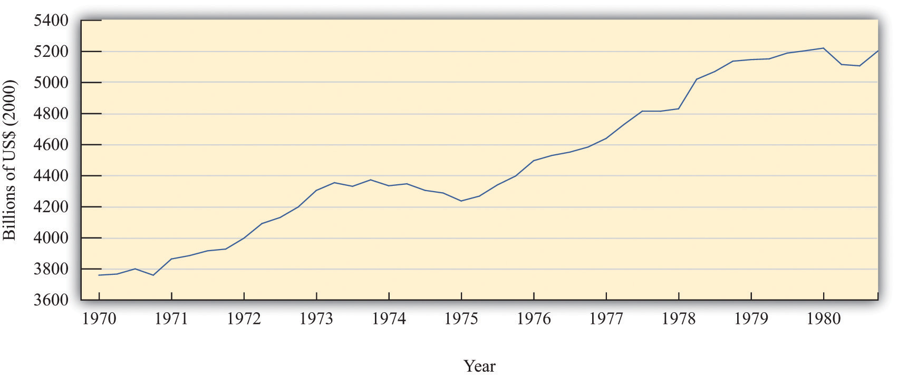The figure shows real GDP in the 1970s. There was a protracted recession in the mid-1970s and a smaller recession toward the end of the decade.
Source: Bureau of Economic Analysis.
President Reagan and his economic advisors argued that high taxes were one of the causes of the relatively poor performance of the US economy. In particular, they claimed that taxes on income were deterring people from working as hard as they would otherwise. Unlike President Kennedy’s advisors, who had argued that income tax cuts would increase real GDP by stimulating aggregate expenditure, Reagan’s advisors said that tax cuts would increase potential output. Proponents of this economic view became known as supply siders because their focus was on the production of goods and services rather than the amount of spending on goods and services.
After his inauguration, President Reagan pushed hard for changes in the tax code, and Congress enacted the Economic Recovery Tax Act (ERTA) in 1981. This law reduced tax rates substantially: Figure 27.9 "Marginal and Average Tax Rates, 1982 to 1984" shows marginal and average tax rates for 1982, 1983, and 1984. The marginal tax rates are shown in part (a) in Figure 27.9 "Marginal and Average Tax Rates, 1982 to 1984": marginal rates decreased significantly for taxable income up to about $80,000.In contrast to Figure 27.3, no tax was payable until taxable income was $2,300. This is because the definition of taxable income at that time included the exemption. As a consequence, average tax rates also decreased significantly between 1982 and 1984 (part (b) in Figure 27.9 "Marginal and Average Tax Rates, 1982 to 1984").
Figure 27.9 Marginal and Average Tax Rates, 1982 to 1984
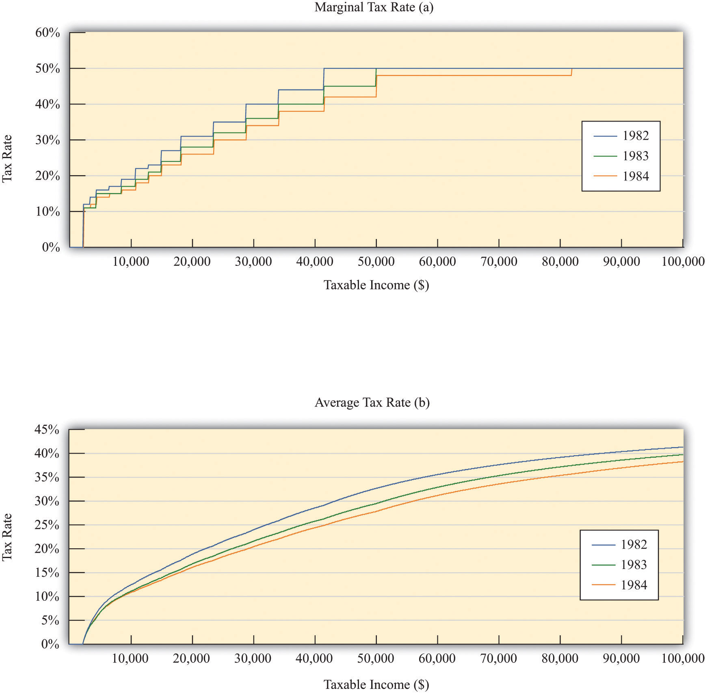The figure shows marginal (a) and average (b) tax rates from 1982 to 1984, the period of the Reagan tax cuts. Both marginal and average rates decreased substantially.
Source: Department of the Treasury, IRS 1987, “Tax Rates and Tables for Prior Years” Rev 9-87
The main mechanism that the supply siders proposed was that lower income taxes would increase the incentive to work. To analyze this claim, we need to investigate how the decision to supply labor depends on income taxes. As with our analysis of consumption, we look at labor supply by thinking about the behavior of a single household. We then suppose that the household can be taken as representative of the entire economy.
Each individual faces a time constraint: there are only 24 hours in the day, which must be divided between working hours and leisure hours. An individual’s time budget constraintThe restriction that the sum of the time you spend on all your different activities must be exactly 24 hours each day. says that, on a daily basis,
leisure hours + working hours = 24 hours.The labor supply decision is equivalently the decision about how much leisure time to enjoy. This decision is based on the trade-off between enjoying leisure and working to purchase consumption goods. People like having leisure time, and they prefer more leisure to less. Leisure can be thought of as a “good,” just like chocolate or blue jeans or cans of Coca-Cola. People sacrifice leisure, working instead, because the money they earn allows them to purchase goods and services.
To see this, we first rewrite the time budget constraint in money terms. The value of an hour of time is given by the nominal wage. Multiplying through the time budget constraint by the nominal wage gives us a budget constraint in dollars rather than hours:
(leisure hours × nominal wage) + nominal wage income = 24 × nominal wage.The second term on the left-hand side is “nominal wage income” since that is equal to the number of hours worked times the hourly wage.
Because wage income is used to buy consumption goods, we replace it by total nominal spending on consumption, which equals the price level times the quantity of consumption goods purchased:
(leisure hours × nominal wage) + (price level × consumption) = 24 × nominal wage.This is the budget constraint faced by an individual choosing between consuming leisure and consumption. Think of it as follows: it is as if the individual first sells all her labor at the going wage, yielding the income on the right-hand side. With this income, she then “buys” leisure and consumption goods. The price of an hour of leisure is just the wage rate, and the price of a unit of consumption goods is the price level. Finally, if we divide this equation through by the price level, we see that it is the real wageThe nominal wage corrected for inflation. (the wage divided by the price level) that appears in the budget constraint:
leisure hours × real wage + consumption = 24 × real wage.It is the real wage, not the nominal wage, that matters for the labor supply decision.
Toolkit: Section 31.3 "The Labor Market"
You can review the labor market in the toolkit.
What happens if there is an increase in the real wage? There are two effects:
Putting these predictions together, we must conclude that we do not know what will happen to the quantity of labor supplied when the real wage increases. On the one hand, higher real wages make it attractive to work more since you can get more goods and services for each hour of time that you give up (the substitution effect). On the other hand, you can get the same amount of consumption goods with less effort, which makes it attractive to work less (the income effect). If the substitution effect is stronger, the labor supply curve has the standard shape: it slopes upward, as in Figure 27.10 "Labor Supply".
Figure 27.10 Labor Supply
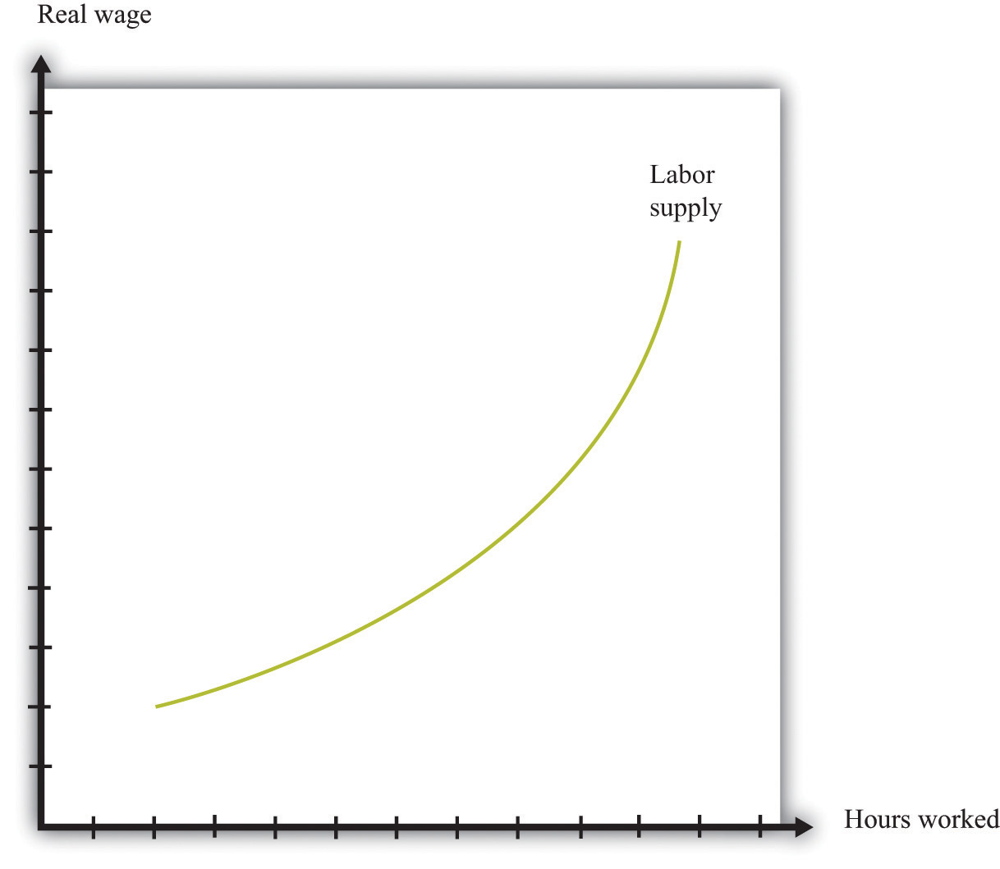The response of the quantity of labor supplied to the real wage depends on both an income effect and a substitution effect. When the substitution effect is larger than the income effect, the supply curve has the “normal” upward-sloping shape.
In the end, the shape of the labor supply curve is an empirical question; we can answer it only by going to the data. And as you might be able to guess, it turns out to be a difficult question to answer, once we start dealing with the complexities of different kinds of labor. The view of most economists who have studied labor supply is that higher real wages do lead to a greater quantity of labor supplied, but the effect is not very strong. The income effect almost cancels out the substitution effect. This means that the labor supply curve slopes upward but is quite steep.
Suppose an individual knows the nominal wage but also knows that she is going to be taxed on any income that she earns at the going income tax rate. The wage rate that matters for her decision is the after-tax real wage. Her real disposable income is
All our discussion of labor supply continues to hold in this case, except that we need to replace the real wage with the after-tax real wage since it is the after-tax wage that matters to the individual.
Figure 27.11 "Labor Supply Response to Tax Cut" shows the effect of a cut in taxes. If the labor supply curve slopes upward, the tax cut leads to an increase in the quantity of labor supplied. And if labor supply increases, then potential output also increases. In other words, one effect of tax cuts is to induce people to work harder and produce more real GDP. To keep things simple, Figure 27.11 "Labor Supply Response to Tax Cut" is drawn supposing that there is no change in the equilibrium real wage as a result of the tax cut. In fact, we would expect the real wage to decrease somewhat as well. Buyers of labor as well as sellers of labor would benefit from the tax cut. Indeed, it is this decrease in the real wage that induces firms to purchase the extra labor that individuals wish to supply. (If we included this in our picture, then the after-tax real wage would still increase but by less than shown in the figure.)
Figure 27.11 Labor Supply Response to Tax Cut
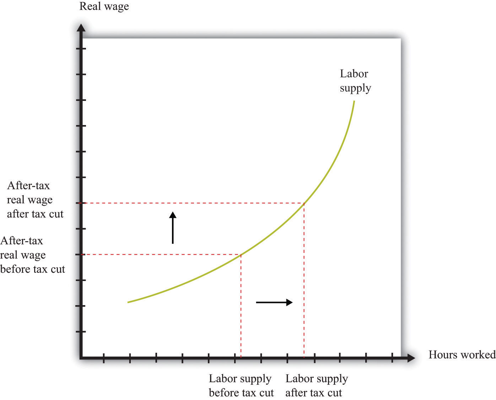The wage that matters for labor supply decisions is the after-tax real wage. If income taxes are cut, and the real wage is unchanged, then households will supply more labor.
Supply-side economics was controversial and generated a great deal of debate back in the 1980s and since. Yet the argument that we have just presented is not really controversial at all. Almost all economists agreed that as a matter of theory, cuts in taxes could lead to increases in the quantity of labor supplied. The disagreements concerned the magnitude of the effect.
Some proponents of supply-side economics made a much stronger claim. They said that the positive effects on labor supply could be so large that total tax revenues would increase, not decrease. They argued that even though the government would get less tax revenue on each dollar earned, people would work so much harder and generate so much more taxable income that the government would end up with more revenue than before.
This argument was encapsulated in the so-called Laffer curve. Economist Arthur Laffer asked what would happen if you graphed tax revenues as a function of the tax rate. Obviously (he observed) if the tax rate is zero, then tax revenues must be zero. And, Laffer argued, if the tax rate were 100 percent, so the government took every penny you earned, then no one would have an incentive to work at all, and the quantity of labor supplied would drop down to zero. Once again, income tax revenues would be zero. In between, tax revenues are positive.
Figure 27.12 "Laffer Curve" shows an example of a Laffer curve. There is some tax rate that will lead to the maximum possible revenue for the government. This itself is not that interesting: the goal of the government is not to raise as much tax revenue as possible. But if the tax rate lies to the right of that point, then—as the picture shows—a cut in taxes will increase tax revenues.
Figure 27.12 Laffer Curve
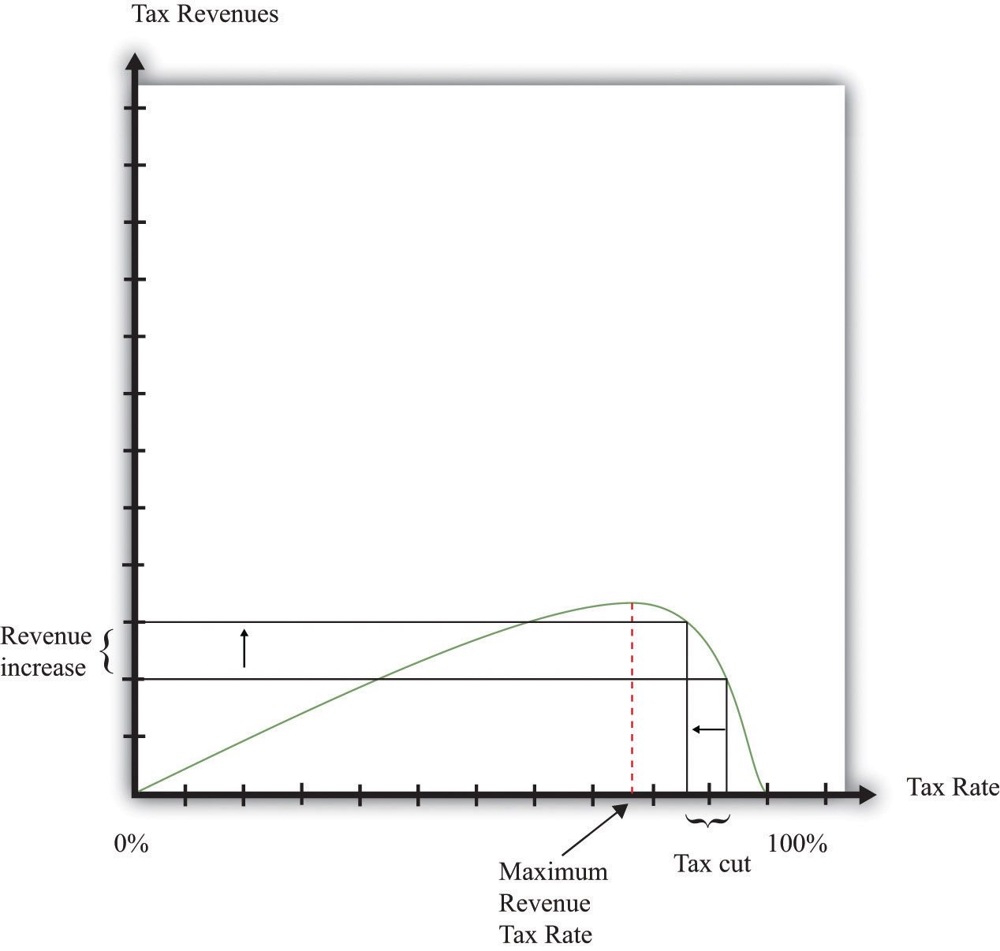The Laffer curve says that it is possible for a reduction in the tax rate to lead to an increase in tax revenues. Although this is a theoretical possibility at very high tax rates, most economists view the Laffer curve as a theoretical curiosity with limited applicability to real economies.
Just as almost all economists agreed that there would be some supply-side effects of income tax cuts, almost all economists agreed that the Laffer curve argument was inapplicable to the US economy (or indeed any other economy). The evidence indicated that the effects of tax cuts on hours worked were likely to be relatively small. Almost no economists actually believed that the economy was on the wrong side of the Laffer curve, where tax cuts could pay for themselves.
Unfortunately, the Laffer curve argument was politically appealing, even though it was not supported by economic evidence. Buoyed by this argument, President Reagan oversaw both tax cuts and big increases in government spending. As a result, the US government ran large budget deficits. Following on from the ERTA, President Reagan and President George H. W. Bush after him were both forced to increase taxes to bring the budget back under control.The economic history of the United States in the 1980s was quite complex. Because this chapter concerns income taxes, we have considered only one of the policy changes of the Reagan administration. Other changes in tax policy were designed to promote savings. We have not discussed other aspects of President Reagan’s fiscal policy (there were large increases in government purchases), the tight monetary policy pursued by the Federal Reserve, or the behavior of interest rates and exchange rates. All these are matters for other chapters.
Our goal in this chapter was to understand the effects of tax changes on aggregate consumption and aggregate output. A tax cut puts more income in the hands of households, and thus consumption increases. The increase in consumption in turn leads to an expansion in the overall level of economic activity. The framework does a good job of describing and explaining actual economic outcomes during the Kennedy tax cut. We can thus have some faith that our basic framework is reasonably sound. Having said that, it is a very simple model that does have some deficiencies, most notably its neglect of the supply side of the economy.
Income tax cuts also decrease overall national saving. Income tax cuts increase household disposable income and lead to increased saving by households (as well as increased consumption). At the same time, however, income tax cuts mean that the government is saving less (or borrowing more). The net effect is to decrease national saving. The theory of economic growth tells us that reduced saving has the effect of decreasing future standards of living.
We then examined the Reagan tax cuts of the 1980s. These tax cuts were aimed at stimulating employment and output by encouraging people to work more. The belief that tax cuts lead to an increase in the quantity of labor supplied is consistent with basic microeconomic principles, but there is disagreement about the likely size of the effect.
Although we cast our discussion of the effects of taxes on spending using the tax cuts of the Kennedy and Reagan administrations, the lesson is more general. It is common for the United States and other countries to use variations in income tax rates as a tool of intervention. We highlighted several effects of such interventions. Income tax changes alter the level of household disposable income and thus influence consumption expenditures; they affect saving and capital accumulation; and they affect labor supply. This policy tool therefore gives the government considerable influence on the aggregate economy.
Indeed, when the crisis of 2008 hit the world’s economies, many countries responded by implementing expansionary fiscal policies, including cuts in taxes. Australia, the United Kingdom, Singapore, Austria, and Brazil are just a few of the countries who cut taxes in response to the crisis.
We used the Kennedy tax cut to illustrate demand-side effects and the Reagan tax cut to illustrate supply-side effects because those were the channels emphasized by the economic advisors at the time. Just about every change in the income tax code, however, has effects on consumption, saving, and labor supply. Every change in the code has short-run effects and long-run effects, and, as we have seen, these effects can be contradictory. Thus whenever you hear or read about proposed changes in taxes, you should try to remember that all these different stories will be in operation. The politicians and pundits who are supporting or opposing the change will typically talk about only one of them, depending on the spin they wish to convey. The analysis of this chapter should help you always see the bigger picture.
Finally, remember that tax changes will typically have major effects on the distribution of income. There are winners and losers from every change in the tax code. This, above all, is why changes in the tax code are an endless source of political debate.
Internal Revenue Service
Economics Detective
Spreadsheet Exercises